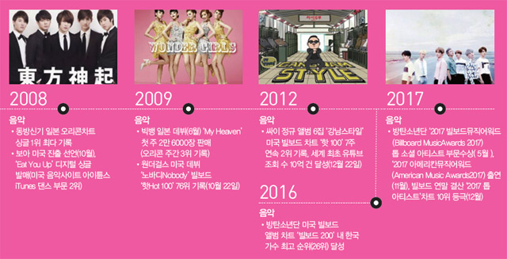

📌 시기 📌
한류 2.0: 2000년대 중반 ~ 2010년대 초반
1980년대부터 우리나라 몇몇 가수들이 일본에서 상단한 인기를 끌었고 1990-2000년 초반까지 활발한 활동을 하였지만, 한류 2.0시대는 아이돌 가수가 세계 무대를 진출하였다. 지리적 요인과 문화적으로 유사한 아시아를 뛰어넘어 미국과 유럽의 언론과 대중의 관심을 뜨겁게 받았다는 점이 차별적인 부분이라 할 수 있다. 또한, 세상이 발전하면서 유튜브와 같은 동영상 전문 사이트와 SNS를 통해 한류가 확산 되었기
때문에 1.0시대와 차이가 있다.
🎈 장르 🎈
K-POP, 대중문화, 일부 문화 예술한류스타 EXO의 무대
K-Pop이란 한국에서 대중적 인기를 얻은 유행 음악을 총칭하는 이름이다. 원래는 가요라고 불렀지만, 국가 이니셜에 Pop을 덧붙여 표기하고 있다. 현재 K-pop에서 트렌드는 아이돌 그룹이라고 할 수 있다. 대표적인 아이돌 그룹으로는 블랙핑크, 트와이스, 엑소, 레드벨벳, NCT, 몬스타엑스, 스트레이키즈, BTS 등 한국에는 150개 이상의 아이돌 그룹이 활발히 활동하고 있다. K-Pop은 여러 면에서 특별한 가치를 지니는데, 단순히 음악에만 국한되지 않는다. K-Pop의 인기 비결은 뛰어난 가창력, 능숙한 무대 매너, 현란한 댄스가 어우러진 화려한 공연에 있다. 이 모든 것들을 조화롭게 이루면서 Kpop은 하나의 장르로 태어났다.
🌎 대상 국가와 소비자 🌎
아시아, 유럽 일부, 아프리카, 중동 중남미, 미국, 10-20대팬들과의 활발한 소통은 K-Pop의 뜨거운 인기를 설명하는 또 다른 포인트다. 아이돌그룹 멤버 들은 소셜미디어를 활용해 세계 각국의 팬들과 실시간으로 소통하고 있다. Kpop팬들은 활발한 팬클럽 활동을 통해 자신이 응원하는 가수와 나아가 K-Pop 발전에 기여하고 있다. 팬들은 가수를 단순히 스타로만 생각하지 않는다. 아이돌 그룹의 성장해가는 과정을 지켜보며, 자신들도 함께 성장하는 것 같은 만족감과 보람을 공유하며
강한 유대감을 형성한다.